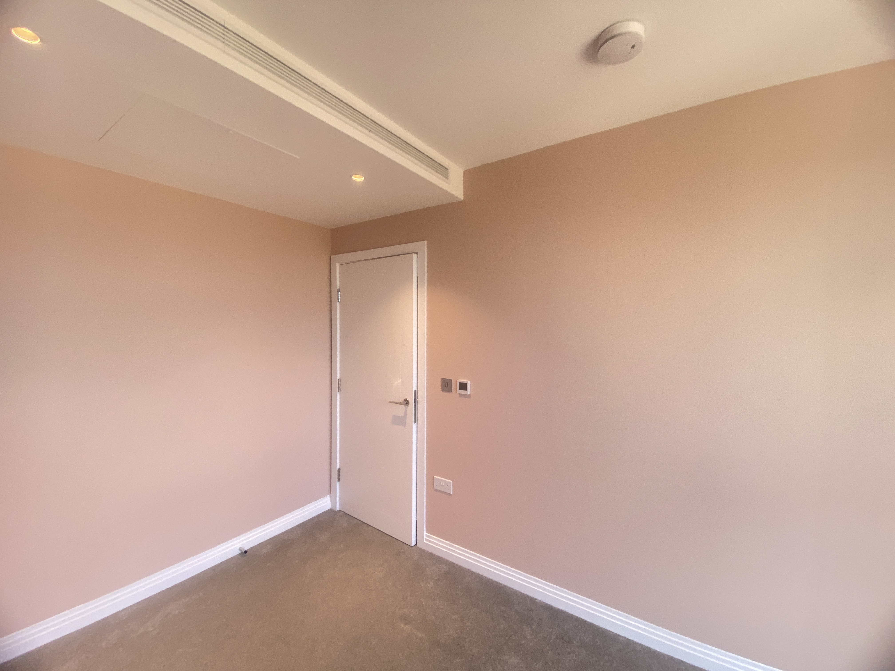
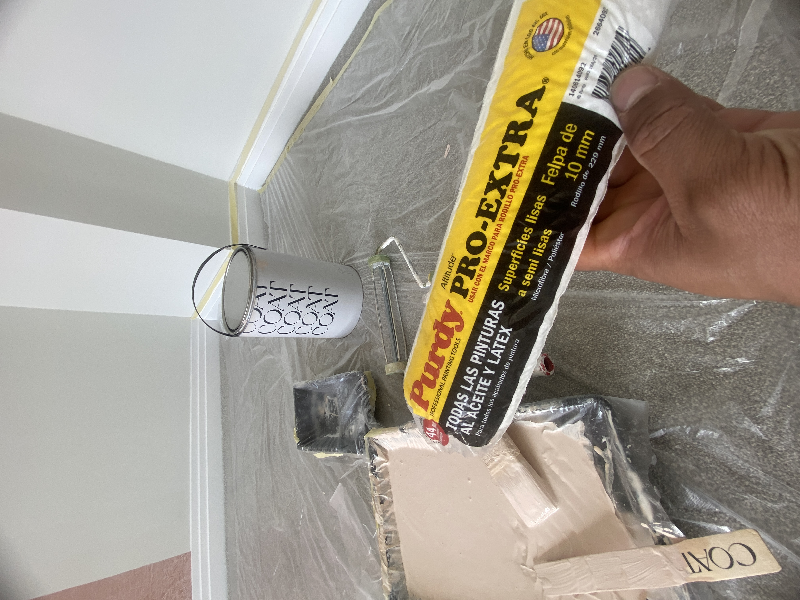
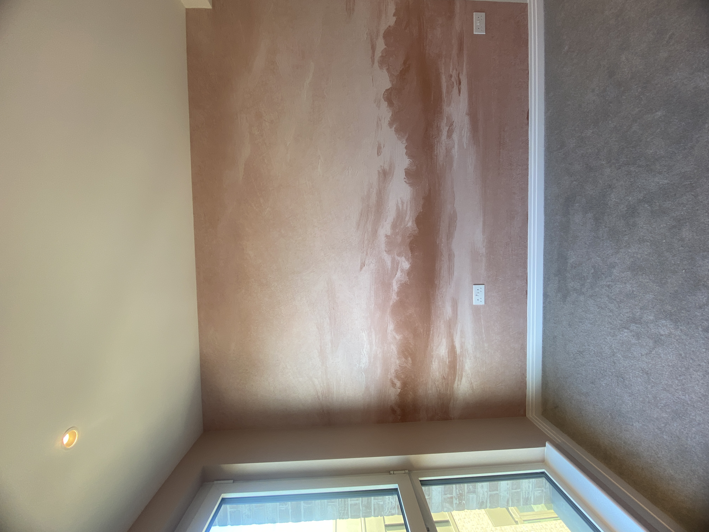
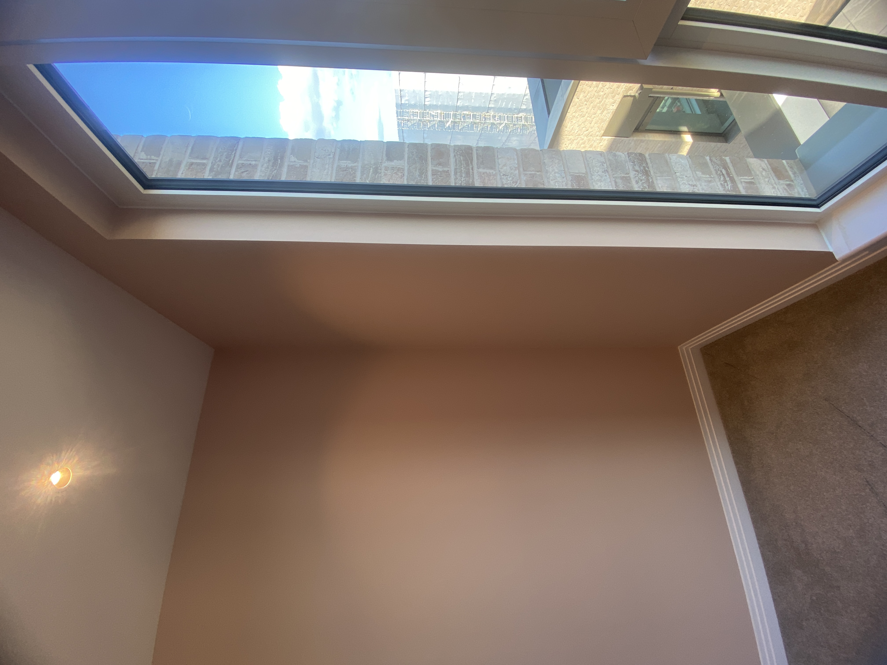

COAT Paint Review: Coverage, Drying Time and Real-World Results
COAT is a paint brand that has attracted attention from homeowners and decorators looking for modern interior colours and a premium finish. But how does it actually perform when used on a real decorating project?
We recently used COAT paint to repaint a bedroom in West London, giving us the opportunity to assess its application, coverage, drying time and final finish in real working conditions.
For this project, we applied three coats of a soft, dusty-pink colour to the walls and ceiling, excluding one feature wall that was later completed with a mural by a specialist third-party decorator.
Content note: This article was created with AI assistance and reviewed and edited by Daniel Pedro V Sousa based on EveroDecor's real-world decorating experience.

The Project: A West London Bedroom Repaint
The project was a bedroom repaint in West London. The brief was to create a warm, muted pink across the room, with one wall reserved for a large painted mural featuring a soft cloud-and-horizon scene.
Our part of the project was to prepare the room, cut in and roll the COAT paint across the remaining three walls and ceiling, and leave an even base ready for the mural artist.
The room had already been painted, so we were working over an existing painted surface rather than starting from bare plaster. This is important when assessing coverage because the result from any paint can depend partly on the surface and colour underneath.
What We Used
We kept the equipment relatively simple for this interior painting project:
- COAT emulsion in a 2.5L tin
- Purdy Pro-Extra Altitude roller sleeve
- 10mm pile, 229mm roller
- Standard roller tray and frame
- Masking tape
- Dust sheets
- Standard professional decorating preparation equipment
The Purdy roller was suitable for the smooth-to-semi-smooth wall surface we were working on and helped us achieve an even application.

How Easy Is COAT Paint to Apply?
On this project, we found COAT paint straightforward to apply using a roller.
The paint spread evenly across the walls and was easy to work with during the cutting-in and rolling stages. As with any interior emulsion, achieving a good result depended on maintaining an even application and avoiding overworking the paint as it began to dry.
The colour showed some patchiness after the first coat. This was not unexpected because we were applying a mid-tone pink over a previously painted surface.
After the second coat, the colour became much more consistent. The third coat helped improve the overall depth and evenness of the finish.
For professional decorating work, the paint itself is only part of the result. Surface preparation, roller choice, application technique and drying conditions can all affect the final appearance.
How Long Does COAT Paint Take to Dry?
One of the most useful characteristics we noticed during this project was the relatively short time between coats.
On this particular job, the paint was touch-dry and ready for another coat in around one hour.
This was particularly useful because another decorator was scheduled to work on the feature wall. Being able to apply another coat without waiting several hours helped us keep the project moving and allowed the room to be completed within a single working day.
Actual drying and recoat times can vary depending on ventilation, temperature, humidity, surface conditions and how heavily the paint has been applied.

How Many Coats of COAT Paint Are Needed?
For this project, we applied three coats of COAT paint to achieve the depth and consistency of colour we wanted.
The first coat provided the initial coverage but still showed some variation in colour. The second coat significantly improved the coverage and colour consistency.
The third coat helped even out the remaining areas and produced a more consistent appearance across the walls.
It is worth pointing out that three coats should not be considered a universal requirement for COAT paint. The number of coats needed can depend on the colour, the colour underneath, the condition of the surface, preparation, application method and the desired depth of colour.
For this particular bedroom and colour, three coats gave us the result we were looking for.
COAT Paint Coverage
Coverage was one of the strongest aspects of the project.
For the bedroom walls and ceiling, excluding the mural wall, we used less than 5 litres of COAT paint across three coats.
Considering the depth of the pink colour and the fact that three coats were applied, we were pleased with how far the paint went.
However, coverage from one decorating project should not be treated as a guaranteed coverage rate for every room. Room dimensions, surface condition, colour changes and application methods can all make a significant difference.
If you are estimating how much paint you need, calculate the surface area first and then allow for the manufacturer's stated coverage and the number of coats required.

Project note: The mural on the feature wall was completed by a third-party specialist decorator and was not carried out by EveroDecor.
The Final Finish
Once the three coats had dried, the colour was even and consistent across the painted areas.
The finish worked particularly well alongside the mural feature wall. The clean transition between the painted walls and the artwork was important because uneven coverage or visible roller marks would have been much more noticeable next to the detailed mural.
We were happy with the final appearance in both natural and indoor light.
COAT Paint: Pros and Things to Consider
What we liked
- Good coverage on this particular project
- Around one-hour recoat time under the conditions we experienced
- Straightforward roller application
- Consistent colour after three coats
- Smooth and even final appearance
- Worked well alongside the painted mural feature wall
Things to consider
- Three coats were required for this particular colour and surface
- Coverage will vary depending on the room and surface
- Drying time can change depending on environmental conditions
- Good preparation is still essential for a professional finish
Even a good quality paint cannot completely compensate for poor surface preparation. Filling, sanding, priming and cleaning the surface can all influence the final result.
Is COAT Paint Any Good?
Based on our experience on this West London bedroom project, yes, we were pleased with the performance of COAT paint.
The main strengths we noticed were its application, coverage and relatively short recoat time.
We applied three coats to achieve the depth and consistency we wanted and used less than 5 litres for the walls and ceiling, excluding the feature wall.
The final finish was even and worked well alongside the mural.
However, one decorating project is not enough to say that every COAT colour or product will perform in exactly the same way. Different surfaces, colours and conditions can produce different results.
For that reason, we consider this a real-world review based on our experience, rather than a universal performance test.
Our Verdict
COAT performed well on this project.
The paint was straightforward to apply, the recoat time helped us keep the job moving, and the coverage was better than we expected for a three-coat application of a mid-tone colour.
The final finish was smooth and consistent, which was particularly important because the painted walls needed to sit alongside a detailed mural feature wall.
Would we use COAT again?
Yes. Based on this project, we would be comfortable using COAT on a similar residential interior decorating job.
If you are comparing different paint brands, however, it is worth looking beyond the brand name. The best paint for a particular project can depend on the surface, colour, finish, durability requirements and budget.
Frequently Asked Questions
How many coats of COAT paint did you apply?
We applied three coats of COAT paint to the bedroom walls and ceiling. The third coat helped achieve the desired depth and consistency of colour.
How long does COAT paint take to dry?
On this project, the paint was touch-dry and ready for another coat in around one hour. Actual drying times can vary depending on temperature, humidity, ventilation, surface conditions and application.
How much COAT paint did you use?
We used less than 5 litres for the bedroom walls and ceiling, excluding the feature wall, across three coats.
Is COAT paint suitable for bedrooms?
Based on our experience, COAT worked well for this bedroom repaint. The final colour was even and consistent after three coats.
Is COAT paint good for professional decorating?
We were pleased with how COAT performed on this professional decorating project. Application was straightforward, coverage was good and the relatively short recoat time helped us complete the work efficiently.
Would EveroDecor use COAT paint again?
Yes. Based on this project, we would be happy to use COAT again on a similar residential interior decorating project.
Is three coats of COAT paint always necessary?
No. The number of coats required will depend on the colour, surface, existing paint and desired finish. Three coats were necessary for us to achieve the result we wanted on this particular bedroom project.
Considering COAT Paint for Your Home?
EveroDecor offers professional painting and decorating services across London, with hands-on experience using different paint brands and finishes, including COAT.
View Our Projects